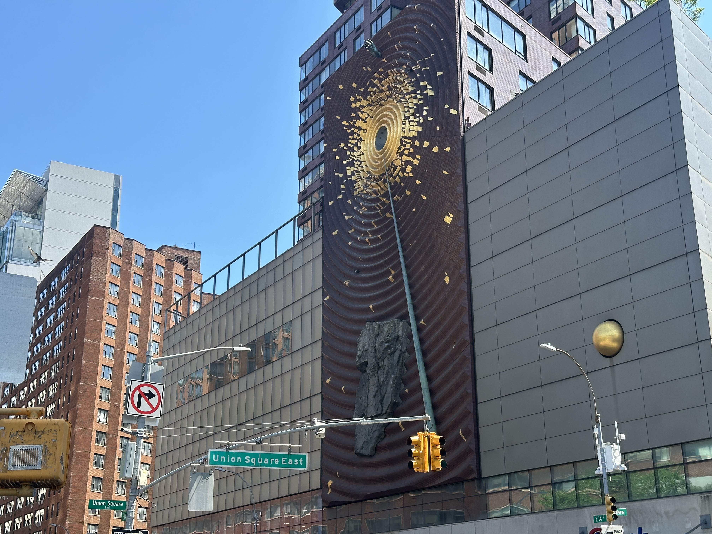

Fieldwork Images
Photos I Took at Union Square



Interview
I went to Union Square in order to understand the real impact of the Climate Clock in everyday public life.
To understand how the Climate Clock functions beyond theory, I visited Union Square and observed how people interacted with it in real time. I wanted to see whether the clock actually interrupts everyday attention, whether people understand what it means when they notice it, and whether it creates any emotional or political response. I also asked several people around the square what they thought about it. This fieldwork helped me move beyond abstract analysis and examine how the Climate Clock works as a public media object in real urban space.
Fieldwork Images

Interview Script
The interviews below are written as a short script based on the types of reactions I observed and the responses I wanted to analyze. Due to privacy concerns, several individuals were uncomfortable appearing on camera; that is why I opted for this format.
Me: Have you noticed the Climate Clock before?
Person 1: Yeah, I’ve seen it a few times when I walk through here.
Me: Do you know what it means?
Person 1: I know it has something to do with climate change, but I never really stopped to look it up.
Me: Did that clock catch your attention?
Person 2: Yes, because it’s big and bright. But honestly, I just treat it like another sign in the city.
Me: Were you curious about it?
Person 2: Not really. I noticed it, but I just kept walking.
Me: Have you ever paid attention to the Climate Clock?
Person 3: I’ve noticed it, yes, but I never thought much about it.
Me: Why not?
Person 3: I guess because in New York there are so many things demanding your attention. It just becomes part of the background.
Me: Did you know what the Climate Clock means?
Person 4: Yes. I actually looked it up before because I was curious.
Me: How did it make you feel?
Person 4: Honestly, not that much. I understand it’s serious, but after a while it still feels like just a number.
Me: What was your reaction when you learned what the Climate Clock was?
Person 5: I thought it was interesting and kind of clever. I researched it because I wanted to know where the number came from.
Me: Did it change anything for you?
Person 5: Not really. It made me think for a minute, but I wouldn’t say it changed how I act.
Me: You said you had seen it before and looked it up. What did you think after that?
Person 6: I understood it better after researching it, but emotionally I still felt kind of distant from it.
Me: Why do you think that is?
Person 6: Maybe because it’s so abstract. It tells me time is running out, but it doesn’t tell me what that means in daily life.
Me: What did you think when you saw the Climate Clock?
Person 7: At first I just thought it was another digital display, but then I read about it and it really stayed with me.
Me: In what way?
Person 7: It made the issue feel more immediate. I know one clock alone can’t solve anything, but it pushed me to talk about it more.
Me: Did you do anything after seeing it?
Person 7: Yes. I shared it with some friends and posted about it on social media because I thought more people should know what it means.
Conclusion
Based on my observations, while there are indeed people passing through Union Square who look up and take notice, they are far outnumbered by those who simply walk straight past. This may be because many people traverse this area frequently and are already familiar with the clock's function; consequently, many simply continue on their way. Others, however, do look up to observe the clock—perhaps pausing briefly to conduct a quick search on their phones—yet once they have paused, they too put away their devices and continue moving forward.
These interviews suggest that the Climate Clock can successfully attract attention, but its meaning is not always clear to the public. Because the clock does not literally “speak,” many people do not immediately understand what it is measuring, why the number matters, or what they are supposed to do after seeing it. For some people, it becomes part of the visual background of the city. For others, even after they understand it, the clock still feels emotionally distant because it remains abstract and numerical.
Due to limited time, my sample size for random interviews was relatively small; however, I also polled my circle of friends. Many of them expressed curiosity and were willing to conduct a search to learn more. Yet, once they had looked into the matter, they simply put it out of their minds—partly because they were unsure what actions they could take, and partly because they felt the issue was too remote to have any bearing on their own lives.
In this sense, the Climate Clock works well as a reminder, but it also has important limitations. It can make climate crisis visible, and it can briefly interrupt routine. However, visibility does not automatically produce comprehension, emotional engagement, or action. The clock can warn people that time is running out, but it does not by itself explain how climate change affects everyday life, who is most vulnerable, or what meaningful action should follow.
The Climate Clock is indeed a highly creative way to visualize the issue of climate change, effectively drawing people's attention to the matter. However, in reality, it proves far less effective when it comes to explaining the underlying climate problems or the specific actions that can be taken; people may still perceive the issue as something distant and remote from their own lives.